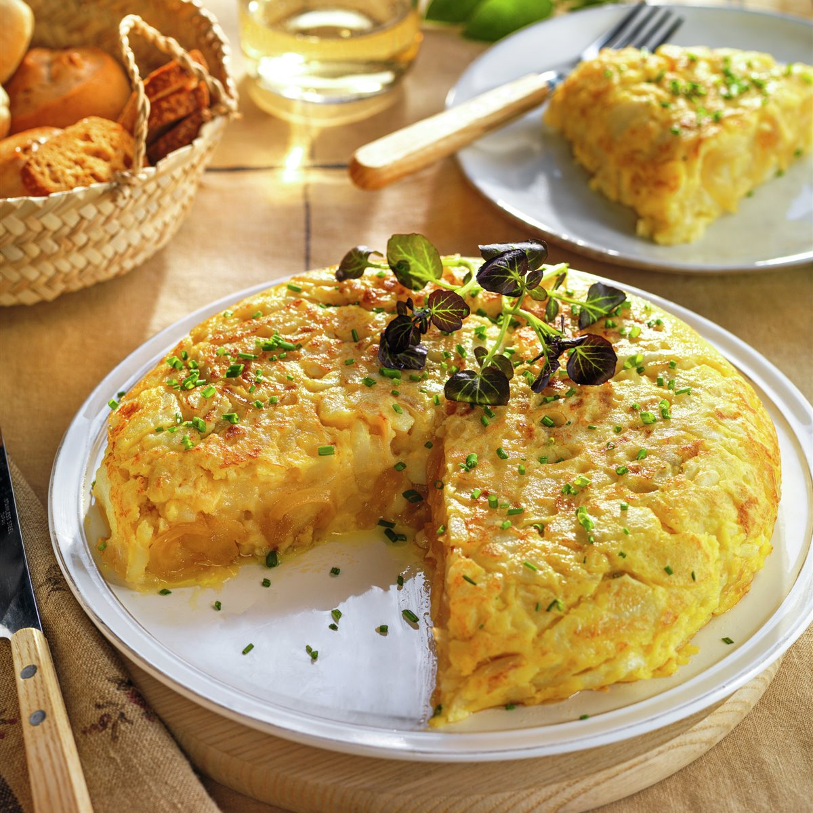

Recipe of tortilla de patatas (Spanish omelette)

Description
Tortilla de patatas, or Spanish omelette,
is a quintessential dish of Spanish cuisine that embodies the spirit
of simplicity and flavor. Made primarily from eggs and potatoes, this hearty omelette
can also include onions, depending on personal preference. Its roots can be traced back
to rural Spain, where it served as a nourishing and filling meal for families.
The dish is characterized by its golden hue and thick, custardy texture, making it a favorite
for any time of day—whether served as a tapa, a main course, or even in a sandwich. With its versatile
nature and deep cultural significance, tortilla de patatas is more than just a meal; it’s a symbol of Spanish culinary tradition,
bringing people together over lively debates about the “perfect” recipe. Whether enjoyed in a bustling tapas bar or made at home,
this beloved dish is a must-try for anyone looking to experience the heart of Spain.
Ingredients
- 1kg potatoes
- 6 medium sized eggs
- Salt
- Olive oil
- 1-2 onions
Steps
- Prepare the Potatoes:
- Peel the potatoes and slice them thinly (about 1/8 inch thick). You can also cut them into small cubes if you prefer.
- Cook the Potatoes:
- Heat a generous amount of olive oil in a large skillet over medium heat.
- Add the sliced potatoes (and onions, if using) to the skillet. Season with a pinch of salt.
- Cook the potatoes slowly, stirring occasionally, until they are tender but not browned (about 15-20 minutes). Drain any excess oil if needed.
- Beat the Eggs:
- In a large bowl, crack the eggs and beat them until well mixed. Season with a little salt.
- Combine Potatoes and Eggs:
- Once the potatoes are cooked, gently fold them into the beaten eggs, ensuring they’re well coated.
- Cook the Tortilla:
- Wipe out the skillet and add a bit of fresh olive oil. Heat it over medium-high heat.
- Pour the potato and egg mixture into the skillet, spreading it evenly.
- Cook for about 5-7 minutes, or until the bottom is set and golden brown.
- Flip the Tortilla:
- To flip the tortilla, place a large plate over the skillet. Carefully invert the tortilla onto the plate, then slide it back into the skillet to cook the other side.
- Cook for another 5-7 minutes until it’s cooked through and golden on both sides.
- Serve:
- Once done, transfer the tortilla to a plate. You can serve it hot, warm, or at room temperature, cut into wedges or slices.
Enjoy your homemade tortilla de patatas! It pairs wonderfully with a salad, crusty bread, or simply on its own.